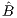
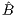
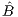
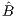

Solution: We prove this by contradiction. There are four parts. For each problem, we prove that if it has either multiple optimal solutions or a degenerate optimal solution then the other problem also has either a degenerate optimal solution or multiple optimal solutions. Let (P) denote the minimization problem and (D) the maximization problem.
- (a)
- Assume (P) has multiple optimal solutions x1 and x2:
We know that (P) has a bfs that is optimal if it has an optimal solution, so assume without loss of generality that x1 is a bfs with basis matrix B1 and objective function coefficients cB1 for the basic variables, and y1 = B1TcB1 is optimal for the dual problem. If y1 is degenerate then we are done.So assume y1 is nondegenerate, so (c-ATy1)j > 0 if j is not an index in B1; we can now derive a contradiction. Since x2 is also optimal, the two solutions y1 and x2 must satisfy complementary slackness. So xj2 = 0 for any j not in B1. But the columns of B1 are linearly independent, so we cannot have two distinct solutions x1 and x2 both satisfying B1xB11 = B2xB12 = b. This contradicts the assumption that we have multiple optimal solutions to (P).
- (b)
- Assume is a degenerate optimal solution to (P) with corresponding basis ∈ ℝm×m:
Let = -Tc. If is degenerate then we are done, so assume it is nondegenerate. Let  ∈ ℝm×(m-1) consist of the p < m columns of with j > 0, together with an additional m- 1 -p columns of . Note that  has more rows than columns, so the rows of are linearly dependent. Let d ∈ ℝm satisfy Td = 0, with d≠0. The original matrix T only has one more row than , so we can choose the sign of d so that Td ≤ 0. Note that any feasible y of the form y = + αd satisfies complementary slackness with so it is optimal for (D). Since is nondegenerate, it is possible to choose α > 0 with + αd feasible, so (D) has multiple optimal solutions. - (c)
- Assume (D) has a degenerate optimal solution :
Let be an optimal bfs for (P) with basis . If is degenerate then we are done. So assume is nondegenerate. Pick any column j that is not in but does have dual slack equal to zero; such a column exists since is degenerate. Since is nondegenerate, xj can be increased while still maintaining feasibility. Any such solution satisfies complementary slackness with , so there exist multiple optimal solutions to (P). - (d)
- Assume (D) has multiple optimal solutions including y1 and y2:
If (P) has multiple optimal solutions then we are done, so assume (P) has a unique optimal solution , which is a basic feasible solution with basis matrix . if is nondegenerate then we require from complementary slackness that Ty1 = Ty2 = c. But is an invertible matrix, so we can’t have two distinct such solutions. So we get a contradiction, so must actually be degenerate.
Solution:
Primal-dual pair:

where H ∈ ℝm×n and g ∈ ℝm. Use the Farkas Lemma to prove that exactly one of the two systems has a solution. (Note: you cannot use LP duality for this question.)
Solution:
Turn (α) into an equivalent system of the form Ax = b,x ≥ 0, and then use Farkas.
Show that this problem has unbounded objective function value by using the revised simplex algorithm starting from the basic feasible solution x = [6,0,4,3,0]T. Use the eta factorization of the inverse, so you should first factorize the initial basis B as LB = U, where L is lower triangular and U is upper triangular. On subsequent iterations, update the basis matrix by using eta matrices. What is the ray that you find? (Hint: you should find the ray on the second iteration.)
Solution:
We have the initial basis matrix
Pivoting on the top left entry in B can be represented as the matrix product L1B = U1 as below:
Pivoting on the middle entry of the second row of U can be represented as L2L1B = U:
so we have

First calculate the dual solution y = B-Tcb, which requires first solving UTz = cB and then calculating y = LTz. We have
and then
The reduced costs are then
so x2 enters the basis. We need to calculate d, the x2 column of B-1N. This requires calculating q = La2 and then solving Ud = q. We get
and then
The minimum ratio test gives
so x1 leaves the basis and x2 enters the basis with a value of 6. The old basic variables are updated as xB - Δd so the new bfs is
with value 13 + Δ2 = 7.
Second iteration:
We need to calculate the updated reduced costs, so we first need to calculate the updated dual variables. The elementary matrix E1 can be constructed using d and then we solve E1Tw = cB followed by solving UTz = w and calculating y = LTz. To find w, we solve
We then solve to get z:
and then
The reduced costs are then
so x5 enters the basis. We need to calculate d, the x5 column of B-1N. This requires calculating q = La5, then solving Up = q, and then solving E1d = p. We get
and then
and then
Since d ≤ 0, we have an unbounded problem. The ray consists of the negative of this d, plus a component of 1 for the incoming variable, so the ray is
It can be checked that Ar = 0 and cTr = 5 = -1.
Solution:
The dual to the LP in Question 4 is
The ray r from Question 4 suggests taking the sum of ri multiplied by the ith dual constraint. This gives the following constraint on y:
which clearly cannot be satisfied. Hence the dual problem is infeasible.
(See the course webpage for more information on AMPL. The software is available on LMS.)
Solution:
Using AMPL and the standard.mod and standard.dat files, we get the optimal solution x = (1,1,3,0,0)T, with value 8.